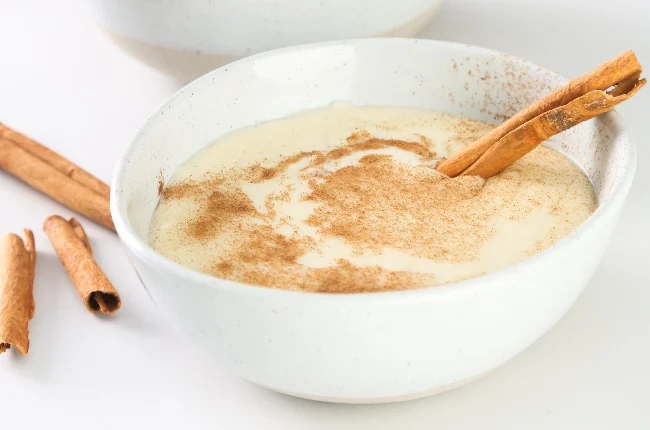

Melkkos recipe

Description
The following is a traditional Melkkos recipe
Ingredients:
- 100g of sugar.
- 1 and a half teaspoons of ground cinnamon.
- 90g of cake flour.
- A pinch of salt.
- 3 tablespoons of butter.
- 1 and a half litres of milk.
- 1 cinnamon stick.
Cooking instructions:
- Mix the sugar and ground cinnamon together.
- Rub together the flour, salt and butter with fingers until it is nice and crumbly.
- Add 3 tablespoons of the now mixed cinnamon sugar and continue mixing with your fingers.
- Pour the milk into a large saucepan and add the cinnamon stick then bring to a boil.
- Once the milk is boiling and forthy, reduce heat and allow to simmer whilst slowly sprinkling the crumbles into the milk and whisk.
- Reduce heat a little more and allow for a gentle simmer, while whisking continually for 10 minutes.
- Turn of the heat, allow to rest for 5 minutes before serving either as is or with a sprinkling of cinnamon sugar.